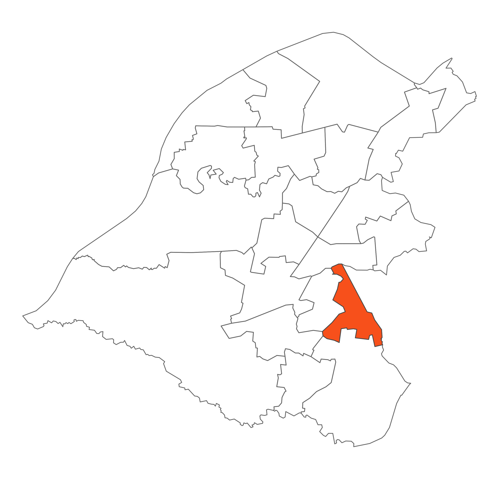

 Village ward is on the eastern boundary of the Borough adjoining Manchester along Brooklands Road. To the south are Timperley wedge and the Bollin Valley and to the west the residential area of Timperley. Within the ward is the regeneration area of Broomwood, which contains a variety of greenspaces including Brooks Drive which runs from the A560 roundabout through the ward and forms part of a linear walkway and cycleway to link through to Davenport Green. Whilst the ward is fairly affluent it has pockets which face significant challenges.